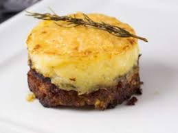

Hachis Parmentier
Préparation possible à l'avance. Servire avec salade
Ingrédients
- 200 g de viande hachée
- 150 g de purée
- 1 oignons
- 1 gousses d'ail
- 2 tomates
- 1 cuillère à soupe de farine
- 1 pincée d'herbes de Provence
- 1 jaune d'oeuf
- 15 g de parmesan
- 15 g de beurre
- 25 g de fromage râpé
- sel
- poivre
Recette
- Hacher l'oignon et l'ail.
- Les faire revenir dans le beurre jusqu'à ce qu'ils soient tendres.
- Ajouter les tomates coupées en dés, la viande hachée, la farine, du sel, du poivre et les herbes de Provence.
- Quand tout est cuit, couper le feu et ajouter le jaune d'oeuf et un peu de parmesan. Bien mélanger.
- Préchauffer le four à 200°C (thermostat 6-7).
- Etaler au fond du plat à gratin. Préparer la purée. L'étaler au dessus de la viande. Saupoudrer de fromage râpé et faire gratiner.